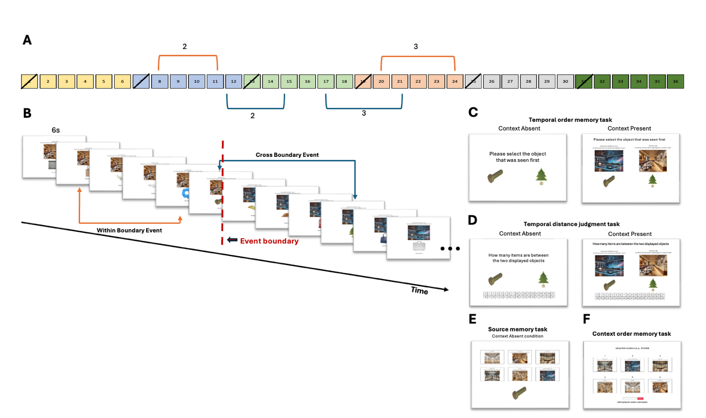

The contribution of retrieval processes to behavioural
markers of event segmentation
Qiying Liu1,2, Tobias Sommer2, & Deborah
Talmi1
Department of Psychology, University of Cambridge
Institute for Systems Neuroscience, University Medical Center
Hamburg-Eppendorf, Germany
Abstract: Event segmentation divides continuous
experience into discrete events. Behavioural markers of event boundary
perception include poorer temporal order memory and higher temporal
distance ratings for pairs encoded across events, compared to those
encoded within the same event. Three pre-registered experiments
challenge the view that these effects depend solely on processes that
occur during the encoding of event boundaries. We found that temporal
order memory and temporal distance judgments depend critically on
associative memory at retrieval, specifically memory for item-context
bindings and memory for the order of contexts. Retrieval processes
determined both the magnitude and direction of effects typically
attributed solely to encoding processes. Taken together, our results
suggest that greater caution is required when interpreting behavioural
markers of event segmentation.
Although we perceive time as a continuous flow, our episodic memory
is organized into discrete units. According to Event Segmentation
Theory, individuals maintain internal models of their surroundings to
anticipate incoming information. When a contextual shift occurs, these
predictions become less accurate, leading to increased prediction error.
This increase in prediction error prompts the formation of an event
boundary, segmenting continuous experience into distinct events
(Reynolds et al., 2007; Zacks et al., 2007).
Recent years have witnessed burgeoning interest in event
segmentation. Work in this area, frequently appearing in top-tier
journals, spans large-scale behavioural experiments, naturalistic
film-watching, neuroimaging, and clinical studies of memory
fragmentation.
Its expansion across lifespan and clinical populations highlights
event boundaries as fundamental units of human experience (Baldassano et
al., 2017; Ben-Yakov & Dudai, 2011; Ben-Yakov & Henson, 2018;
Clewett et al., 2020; McClay et al., 2023; Reagh et al., 2020; Silva et
al., 2025; Wyrobnik et al., 2022; Zacks et al., 2016).
Neural evidence suggests that these boundaries are associated with
significant increases in hippocampal activity, particularly around the
offsets of events in naturalistic stimuli (Ben-Yakov & Dudai, 2011;
Ben-Yakov & Henson, 2018). Boundary processing also engages a
broader cortical network (e.g., posterior medial cortex and angular
gyrus). These peaks in activity have been interpreted as reflecting a
mechanism for encoding and updating event representations, which in turn
shapes how information is stored and later retrieved from memory
(Baldassano et al., 2017).
It is reasonable to hypothesize that if boundaries trigger neural
“updating” of the current event model, they would also produce
measurable behavioural signatures. Two established behavioural read-outs
of event boundary perception are reduced temporal order memory accuracy
and increased temporal distance ratings. Specifically, pairs encoded
across two consecutive events show lower order memory and higher
distance ratings than pairs encoded within a single event. (Bangert et
al., 2020; Clewett et al., 2020; DuBrow & Davachi, 2013; Heusser et
al., 2018; Horner et al., 2016; Lohnas et al., 2023; Pu et al., 2022;
Wang & Egner, 2022). Temporal distance ratings are considered in
this literature as time estimations, and higher ratings of
cross-boundary pairs as evidence for subjective time dilation.
Retrieved-context models offer a theoretical framework that can
explain why event boundaries influence temporal memory.
Retrieved-context model (TCM, CMR and SITH, Howard et al., 2015; Howard
& Kahana, 2002; Lohnas et al., 2015; Polyn et al., 2009)
conceptualise context as a slowly drifting internal state to which items
become bound during encoding. In this framework, it is straightforward
to simulate event boundaries as abrupt shifts of context state, which
reduce context similarity across the boundary (Horner et al., 2016).
Consistent with this account, Horner and colleagues modelled a spatial
boundary as an increase in contextual drift during encoding when
participants passed through a doorway. This manipulation reproduced the
within-event advantage in temporal order memory, such that participants
were more likely to correctly select, among three choices, which item
was encoded before or after the test probe when both probe and target
were encoded in the same room. In their retrieved-context simulations,
within-room targets were easier to identify because they were more
similar to the probe compared to the lures. After a doorway transition,
the probe and target share less similar context, making the correct
option harder to distinguish from foils (Horner et al., 2016).
Building on this framework, Lohnas et al. (2023) found that event
boundaries reduce the similarity of the neural temporal context
representations between contiguously-encoded items. During free recall,
participants’ neural activity reinstated encoding-phase temporal
context, including the boundary-related disruption, suggesting that
boundary effects at encoding propagate to retrieval and influence what
people remember. These results follow and extend those of DuBrow and
Davachi (2013, 2014), who proposed that temporal memory decisions rely
on reactivating intervening item representations that bridge the two
tested items. Taken together, according to this perspective event
boundaries impair temporal order memory by weakening sequential links
across the boundary during encoding and reducing the accessibility of
bridging representations at retrieval.
Like changes in the external environment, changes in internal states
may also signal event boundaries, while stable intenral states can
provide a consistent “internal scaffolding” that binds sequential
moments together. For example, Clewett et al. (2020) found that stable
physiological arousal during encoding, indexed by pupil size, can serve
as an internal contextual state that supports memory integration.
Greater stability in arousal predicted better memory for the order of
events and lower temporal distance ratings between them. Additionally,
work on emotional state dynamics suggests that valence changes, from
neutral to negative, during encoding can likewise cause dilated temporal
distance ratings (Wang & Lapate, 2025). Collectively, these accounts
characterise event boundary effects as due to encoding-related
mechanisms that carry forward to influence retrieval.
Until now, retrieved-context models have only been deployed to
simulate the effects of event boundaries on encoding processes.
Nevertheless, since these models emphasize retrieval dynamics, it is
natural to wonder how retrieval processes modulate the effect of event
boundaries on temporal memory. Intriguingly, Wen and Egner (2022)
reported that the degree of reinstatement of the encoding context was
crucial to the direction of the effect of event boundaries on temporal
order memory. When participants studied objects presented within
coloured frames, and the same frame colour was shown again around each
object at test, temporal order memory was more accurate for
cross-boundary than within-event pairs—a “flipped” effect relative to
the classic event-boundary pattern. The classic pattern was found when
the object was presented without the colour frame that signalled in
which event the item was encoded.
Wen and Egner (2022) pointed out that the flipped direction makes
sense in everyday experience. For instance, it won’t be hard to remember
walking from the meeting room to the kitchenette to refill a water
bottle (cross-boundary), yet we may struggle to recall whether, during a
meeting, we opened the slides before or after muting our microphone
(within-event). In daily life, we are unlikely to refill a water bottle
in the meeting room; that action is naturally tied to the kitchenette.
We also do not usually bounce back and forth between these two places,
so the meeting room and kitchenette stay distinct in memory. These
contexts are meaningful and overlap little, making the cross-boundary
transition more memorable. By contrast, laboratory paradigms typically
operationalise event boundaries by repeatedly shifting task demands or
perceptual features across trials, such as alternating orienting tasks,
stimulus category, or stimulus features (DuBrow & Davachi, 2014;
Heusser et al., 2018; Sols et al., 2017). For example, in DuBrow’s
seminal study (2013), participants alternated between judging objects as
“indoor/outdoor” and faces as “female/male” across the sequence. Wen and
Egner (2022) moved beyond such repeating contexts by using distinct,
non-recurring cues and reinstating them at retrieval, and suggested that
these conditions will give rise to a “flipped” effect whenever
participants are reminded of the encoding context during the test.
Nevertheless, in a crucial test of their hypothesis, in their Experiment
4 source memory for the encoding context did not influence temporal
memory, casting doubt on their interpretation. While their work hinted
that event boundaries influence temporal memory differently outside the
rarified conditions of laboratory experiments, it did not fully resolve
the underlying mechanism.
Following up on Wen and Egner’s (2022) proposal that event boundaries
have a different impact when they are encountered in in the real world,
we hypothesised that outside the artificial conditions of the lab people
often infer temporal relations based on source memory, namely, by
retrieving which contexts the tested items belonged to (“the microphone
must have been in the meeting room”), and the order of those contexts
(“I went to the kitchenette after the meeting”). Good source and
source-order memory can allow people to base temporal order decisions on
deduction and make accurate decisions about the temporal order of test
items (“I must have refilled my water bottle after I muted the
microphone”). It is possible that Wen and Egner did not observe
significant effects of source memory on temporal memory because their
manipulation still relied on relatively simple cues, such as the one-off
orienting task cue and a non-repeating coloured frame around each
object. In paradigms that are even more ecologically valid, the
influence of associative memory – specifically, source and source-order
memory – may be more prominent. To test this hypothesis, in Experiment 1
we conceptually replicated Wen and Egner’s (2022) study using a more
ecologically valid paradigm, drawing on Horner et al., (2016). We
hypothesised that since we maintained the crucial element of their
design – non-repeating, and even more highly distinctive events, a
“flipped” effect will emerge when the encoding context is re-presented
at test.
To summarise, the research reported here set out to illuminate how
event boundaries influence temporal memory in real-life situations. We
hypothesized that outside the lab, retrieval processes may overwhelm the
effect of event boundaries on item-item association and associations
between these items through shared temporal context, at encoding.
Experiment 1was designed as a conceptual replication of Wen and Egner’s
Experiment 4 but using even more distinct, unique events. We failed to
replicate their results, suggesting that the “flipped” effect is not due
to the nature of events. We also observed evidence for effects of source
memory on temporal memory. We followed these up in Experiment 2, now
using the ‘typical’ memory test set-up where the encoded events are not
re-presented to participants. The results provided robust evidence that
source memory and source order memory determine temporal order memory
accuracy and temporal distance ratings. Since these experiments relied
on individual differences in associative memory, Experiment 3
manipulated associative memory by varying the number of events
participants encoded. This experiment showed that the “flipped effect”
can be observed when associative memory is good. Taken together, our
study is first to show that retrieval processes determine the magnitude
and direction of the effect of event boundaries on temporal memory in
ecologically-valid situations.
Experiment 1
Method
We manipulated the availability of context during test and the nature
of test items, using a 2 (present, absent) X 2 (within, between) mixed
design, with the first factor tested between and the second within
participants. This experiment was pre-registered on the Open Science
Framework (OSF): 10.17605/OSF.IO/MZ5W6. We hypothesized that, when
context is present at retrieval, participants would show better temporal
order memory for items that cross an event boundary than for items
encoded within the same event. When context is absent at retrieval, we
expected the opposite pattern: better temporal order memory for
within-event pairs than for cross-boundary pairs. In both
context-present and context-absent conditions, we anticipated that
cross-boundary pairs would be judged as temporally further apart than
within-event pairs.
Participants
Sixty-two healthy young adults (28 females, 34 males), aged 18 to 44
years (M = 27.10, SD = 6.92), were recruited from the University of
Cambridge’s online participant pool, SONA. Participants were compensated
£10 per hour for their time. Individuals with a history of mental health
or neurological disorders, or those taking medications known to affect
brain function, were excluded from participation.
Participants were randomly assigned to the context-present and
context-absent groups. However, due to participant dropout during
recruitment, the final group sizes were uneven, resulting in 33
participants in the context-present group and 29 in the context-absent
group.
Participant exclusion criteria included both preregistered and
additional data quality checks. The preregistered criteria specified the
exclusion of participants whose temporal order memory accuracy was at or
below chance level (≤ 50%) or who failed embedded attention checks. To
further ensure data quality, we additionally excluded participants whose
temporal order accuracy rates or temporal distance judgments were more
than 1.5 interquartile ranges above or below the sample mean.
Participants with a mean distance rating of zero were also removed, as
this indicated non-engagement with the task. A total of 15 participants
were excluded: eight for performing at or below chance level on the
temporal order memory task, five whose mean distance rating was 0, and
two whose distance ratings were more than 1.5 interquartile ranges above
or below the grand mean.
All procedures were approved by the University of Cambridge
Psychology Research Ethics Committee.
Materials
A total of 252 neutral-coloured object images were selected from the
O-Minds database (https://github.com/DuncanLab/OMINDS).
All images were pre-processed to appear as squares with a resolution of
500 × 500 pixels. Additionally, 42 location images were generated using
ChatGPT at a resolution of 525 × 407 pixels. These images represented
six locations in seven places: a museum, a park, a house, a university
campus, a shopping mall, a gym, and a hotel. For example, the museum
locations comprised a café, art gallery, fossil room, astronomy
exhibition room, gift shop, and sculpture room (Figure 1A).
Each of the 42 location images was paired with one encoding question
tailored to its specific context. Event boundaries were created by
changing the location image and its associated encoding question.
Questions targeted either the physical characteristics of objects (e.g.,
size, weight, or material) or their probabilistic or functional use
(e.g., the likelihood of using the object in a particular location or in
a specific way). For each space, three questions were written for
probabilistic use and three for physical characteristics.
Within each space, questions were written to avoid repetition in
linguistic structure (e.g., no two questions used the same verb). All
questions were designed to produce a reasonable mix of "yes" and "no"
responses, with at least 10% of each expected across participants.
Questions that appeared bizarre or emotionally evocative were excluded.
For example, for the museum café location, the encoding question was:
"Can this be stored inside a fridge display in a museum café?"
Procedure
The experiment included seven rounds. In each round participants took
part in an encoding task, a distractor task, and two temporal memory
tests. The first round was considered practice and was not analysed. In
the final experimental round, the context-absent group completed a
source memory test, and all participants then completed a context order
test. Specifically, repeated source and context order memory tests could
encourage participants to rely more on contextual information,
particularly in the context absent group, thereby reducing the impact of
the context manipulation. To minimize strategy changes across rounds, we
restricted these tests to the final round.
Encoding task
In each round, participants encoded a list of objects. Each list
mimicked a visit to six locations in one place, for example, a museum.
In each of these locations, participants encoded six objects by
answering the orienting question associated with that location. Thus,
each list consisted of 36 trials, in which participants encoded a
combination of one location image, one object image, and its associated
encoding question, displayed for 6 seconds. The location image was
presented centrally on the screen, with the object displayed below it,
and the encoding question shown above (Figure 1B). Participants were
asked to respond "yes" or "no" to each question related to the
object–location pairing by pressing J for "Yes" or K for "No"). An
event was defined as a sequence of consecutive images that
shared the same location image and encoding question. Since each
encoding list contained six different location images and corresponding
encoding questions, each list was divided into six events.
 The presentation order of
the seven places was randomized across participants, and within each
list the order of the six locations belonging to that place was also
randomized across participants. For every list, six objects were
randomly paired with each location image, yielding 36 location-object
combinations that participants encoded during the study phase.
The presentation order of
the seven places was randomized across participants, and within each
list the order of the six locations belonging to that place was also
randomized across participants. For every list, six objects were
randomly paired with each location image, yielding 36 location-object
combinations that participants encoded during the study phase.
Figure 1. Stimuli used in the encoding task.
(A) Example of location images from the museum
category. (B) Example encoding trial showing a
location-object pairing accompanied by the corresponding question.
Distractor Task
Following the encoding phase, participants completed a 30-second
distractor task designed to prevent rehearsal and eliminate potential
working memory effects. During this task, two nine-character
alphanumeric strings (e.g., m5y8p2q1b) were presented
sequentially for 15 seconds each, and participants were required to
select the option displaying each string in reverse order. After
completing the distractor tasks, participants proceeded to the memory
tests.
Memory tests
The first test was a temporal order memory test, in which
participants were shown two images and asked to select the one that
appeared earlier (Figure 2C). Next, they completed a temporal distance
judgment test, where they estimated how many images had appeared between
the two probe images (Figure 2D). During both temporal memory tests,
participants in the context-present group were shown the objects with
their associated location images and encoding question. In contrast,
participants in the context-absent group were shown only the object
itself. 22 of the 36 objects participants encoded during the study phase
were selected to form 11 object pairs for the test phase. The object
pairs fell into four conditions: (1) within-event, distance of 2; (2)
within-event, distance of 3; (3) cross-boundary, distance of 2; and (4)
cross-boundary, distance of 3. In the within-event conditions, both
items in a pair were encoded with the same question and location image.
In the cross-boundary conditions, the items were associated with
different encoding questions and location images. The distance refers to
the number of objects that appeared between the two probe objects during
encoding. For example, a distance of 2 indicates that two object images
appeared between the tested items, while a distance of 3 indicates three
intervening images. To avoid potential biases, boundary location images,
the first images of each event, which typically require longer encoding
times and are better remembered, were excluded from pair selection. The
remaining images were randomly selected to form item pairs for each
condition (Figure 2B).

Figure
2. Structure of the experiment and task sequence.
(A) List structure and illustration of within-event
(orange lines) and cross-boundary (blue lines) pair selection. Probe
pairs were separated by either two or three intervening items, with
boundary items, the first item of every event, excluded from selection.
(B) Example of the encoding task. Participants viewed
object–location pairings with an accompanying question and responded
“Yes” or “No.” Within-event pairs were encoded with the same location
image and question, whereas cross-boundary pairs were encoded with
different location images and questions. (C) Example of
the temporal order memory task for both context-present and
context-absent conditions. (D) Example of the temporal
distance memory task for both context-present and context-absent
conditions. (E) Example of the source memory task.
Participants in the context-absent group completed a source memory test
by identifying the location image and question associated with each
object. (F) Example of the context order memory task.
Participants need to reconstruct the order of locations and
questions.
In the final experimental round, after the temporal order and
distance tasks, participants completed one or two additional memory
tests depending on their group assignment. Those in the context-absent
group completed a source memory test to assess their memory for the
context associated with each object. In each source memory trial,
participants were shown an object along with the six location images and
corresponding encoding questions from the final round (Figure 2E). The
encoding question appeared above its respective location image.
Participants were required to identify which location image had been
associated with the object. The six location-question pairs were
presented in random order.
After completing the previous tasks, both groups completed a context
order test. In this task, the six location-encoding question pairs from
the final round were presented in random order, and participants were
asked to reconstruct the order in which they originally appeared during
encoding (Figure 2F). Following this, participants were asked to report
the percentage of time they relied on contextual memory to make their
temporal judgments. All temporal memory tasks were self-paced, allowing
participants to carefully assess their memory.
Data analysis
We pre-registered the analysis to examine how context and boundary
conditions influence temporal order accuracy and temporal distance
ratings using mixed-effects models implemented in the lme4 package in R.
The models included context (context-absent vs. context-present),
boundary condition (within-event vs. cross-boundary), and their
interaction as fixed effects, with participant entered as a random
intercept.
We additionally pre-registered exploratory analyses involving source
memory, which was assessed only in the context-absent group. To examine
the effects of source memory and boundary on accuracy and distance
ratings, a mixed-effects model was fitted. Source memory was categorized
based on whether participants remembered neither, one, or both
location-question pairs associated with the two displayed objects. In
this model, source memory (0 vs.1. vs.2) and boundary were entered as
fixed effects, with participant as a random intercept.
We also examined the effect of objective distance (2 vs. 3), defined
as the number of intervening items between the two tested items, on
temporal distance ratings. In this non-preregistered analysis, boundary,
context, objective distance, and their interactions were entered as
fixed effects, with participant included as a random intercept.
For all models, an ANOVA was performed to evaluate the significance
of the fixed effects and their interactions.
Results
All data analyses were conducted using R (version 4.3.1) within
RStudio.
Temporal order memory
Boundary and context. The analysis revealed a
significant main effect of boundary, F(1, 45) = 36.60,
p < .001, partial η² = 0.45, with higher accuracy for
within-event trials (M = .83, SD = .38) than for
cross-boundary trials (M = .73, SD = .45). There was
also a significant main effect of context, F(1, 45) = 9.30,
p = .004, partial η² = 0.17, such that accuracy was higher in
the context-present group (M = .82, SD = .38) compared
to the context-absent group (M = .73, SD = .45). In
addition, a significant boundary x context interaction was observed,
F(1, 45) = 9.09, p = .004, partial η² = 0.17. Post hoc
Tukey-adjusted comparisons revealed that in the context-absent
condition, accuracy was significantly higher for within-event trials
(M = .81, SE = .03) than cross-boundary trials
(M = .65, SE = .03), t(45) = 6.09, p
< .001, d = 1.88. In the context-present condition, the
boundary effect was smaller but remained significant, with higher
accuracy for within-event (M = .85, SE = .02) than
cross-boundary trials (M = .79, SE = .02),
t(52) = 2.27, p = .03, d = 0.63 (Figure
3A).
Source memory and boundary. There was a significant
main effect of source memory, F(2, 76) = 8.96, p <
.001, partial η² = 0.19. Accuracy increased with the number of location
images correctly remembered for the tested pairs. The main effect of
boundary was not significant, F(1, 76) = 1.58, p =
.21, partial η² = 0.02, nor was the boundary x source memory
interaction, F(2, 76) = 0.01, p > .05, partial η²
< 0.001 (Figure 4A).
Temporal distance judgements
Boundary and context. The analysis revealed a
significant main effect of boundary, F(1, 45) = 138.15,
p < .001, partial η² = 0.75. There was also a significant
main effect of context, F(1, 45) = 9.30, p = .002,
partial η² = 0.11. The boundary x context interaction was not
significant, F(1, 45) = 1.55, p > .05, partial η² =
0.03 (Figure 3B).
Source memory and boundary. The analysis revealed a
significant main effect of boundary, F(1, 58.81) = 6.88,
p = .01, partial η² = 0.10, replicating the effect reported
above. The main effect of source memory did not reach significance,
F(2, 62.17) = 2.33, p > .05, partial η² = 0.07. The
boundary x source memory interaction was also not significant,
F(2, 58.65) = 2.47, p > .05, partial η² = 0.08
(Figure 4B).
Objective distance. Consistent with our other
analyses, the model revealed a significant main effect of boundary,
F(1, 135) = 41.41, p < .001, a significant main
effect of context, F(1, 45) = 8.94, p = .0045, and a
non-significant boundary by context interaction, F(1, 135) =
10.88, p > .05. In contrast, there was no main effect of
objective distance, F(1, 135) = 0.05, p > .05, and
objective distance did not interact with boundary or context (all ps ≥
.18). The three-way interaction among boundary, context, and objective
distance was also not significant, F(1, 135) = 0.34, p
> .05.
B
A
Context Present
Context Absent
Temporal Distance Rating
Temporal Order Accuracy
Effect of Context and Boundary on
Temporal Distance Judgment
Effect of Context and Boundary on
Temporal Order Memory
Context Present
Context Absent
Within
Boundary
Cross
Figure 3. Effects of context and boundary on temporal
memory. (A) Temporal order memory accuracy was higher and (B)
temporal distance judgements lower for within-event than cross-boundary
trials, with a larger boundary effect in the context-absent
condition.
B
A
Effect of Source Memory, Context and Boundary on Temporal
Distance Judgment
Effect of Source Memory, Context and Boundary on Temporal
Order Memory
Temporal Distance Rating

Boundary
Temporal Order Accuracy
Within
Cross
Both
Noneoone
One
Number of sources remembered
Number of sources remembered
Figure 4. Effect of source memory, context and boundary on
temporal memory. (A) Temporal order memory accuracy increased
with number of locations remembered (none < one < both), with no
boundary effects. (B) Distance ratings were higher for cross-boundary
than within-event trials, regardless of source memory.
Discussion
Despite enhancing the uniqueness and distinctiveness of our contexts,
and strengthening item-context associations, we still observed the
classic effect: temporal order memory was better for within-event than
for cross-boundary events in both the context-present and context-absent
groups. This refuted our hypothesis and challenges the claim that
providing distinct, unique context cues during retrieval can produce a
flipped effect, such that the order of cross-boundary events is
remembered better than that of within-event events (Wen & Egner,
2022, Experiments 1-4).
Our hypothesis was supported in the sense that when the context was
present during retrieval, the boundary effect on temporal order memory
was smaller. This effect emerged because participants performed better
on cross-boundary trials when the context was present compared to when
it was absent. We also found that temporal order memory improved when
participants correctly remembered the contexts associated with more
items in the pair.
Additionally, we replicated the classic temporal distance effect,
with cross-boundary pairs judged as farther apart than within-event
pairs. Replicating Wen and Egner (2022) Experiment 3 and 4, retrieval
context also shaped these judgments: participants in the context-absent
condition gave larger distance ratings than those in the context-present
condition. By contrast with temporal memory measures, distance ratings
were not significantly predicted by source memory, nor by the source
memory x boundary interaction. However, in a follow-up analysis
restricted to trials in which participants correctly remembered both
contexts, cross-boundary pairs were rated as farther apart than
within-event pairs, suggesting that boundary structure exerts a stronger
influence when contextual information is successfully retrieved.
We did not register a hypothesis related to objective distance
ratings, but nevertheless expected to observe an effect on both
measures, temporal order memory and temporal distance ratings.
Curiously, we observed that distance ratings were also insensitive to
the number of intervening items, implying that objective distance
contributed little under our task conditions. This was surprising
because it implied that boundary effect corresponded to an increase in
perceived distance of roughly four items. Within retrieved-context
models, this magnitude is difficult to explain as a purely
encoding-driven increase in context drift, because it would require a
large acceleration relative to the drift associated with encoding an
additional item. Together, these results motivate a post-encoding
account in which temporal distance judgments are biased by what
participants can retrieve about item-context associations. Experiment 2
therefore tested this post-encoding account more directly.
Experiment 2
In Experiment 1 we limited ourselves to testing source memory only at
the very end of the session to minimise strategy shifts in temporal
inference across earlier rounds. This design choice only allowed us to
collect data on memory for items encoded in the final round. However, to
further examine how retrieval processes shape temporal memory, and
whether perceived event structure can bias temporal judgments, it is
useful to have more robust data on source memory, namely, associative
memory for the context in which test probes were encoded, and on memory
for context order. Therefore, in Experiment 2 each encoding round was
followed by a test of source and context order memory, a procedure
previously employed by Wen and Egner (2022, Experiment 4). The
experiment was also preregistered on OSF (10.17605/OSF.IO/SYHTA).
Experiment 2 focused on the context-absent condition of Experiment 1.
This design choice was useful for our purposes because it permitted
assessment of source memory for all test items, which cannot be
meaningfully measured when the context is present at retrieval. An
additional benefit was the increased generalisability of our results,
since the context-absent condition is the standard procedure in the
event-segmentation literature.
Following Experiment 1, where better source memory was associated
with more accurate temporal order memory, we hypothesized that this
benefit depended on context order memory. Because distance ratings in
Experiment 1 depended on contextual cues at retrieval but not on
objective distance at encoding, we also tested whether temporal distance
judgments are biased by retrieval decisions. We predicted that
participants’ temporal distance judgments depend not on what they
encoded, but on what they retrieve, specifically whether they infer that
the two items belonged to the same context (within-event) or different
contexts (cross-boundary). A natural prior to have based on simple
environmental statistics that items that were encoded in different
contexts were far apart from each other. If participants deploy such a
heuristic, source memory accuracy could influence temporal distance
ratings. Specifically, for pairs that were encoded in different
contexts, we predicted shorter distance ratings when participants
incorrectly judged them as having been encoded in the same context. For
pairs that were encoded in the same context, we predicted larger
distance ratings when participants incorrectly judged them as having
been encoded in different contexts.
Method
In Experiment 2 we manipulated only one experimental factor – the
presence of boundary during the encoding of test items (within/between),
using a within-participant design. Experiment 2 was conducted as an fMRI
study; however, the present paper focuses only on the behavioural
results. Analyses of the neural data will be reported separately.
Participants
Forty healthy adults (21 female, 19 male), aged 20-39 years (M =
25.93, SD = 4.70), were recruited through the University Medical Center
Hamburg-Eppendorf participant database. Participant exclusion followed
preregistered criteria documented on the OSF
(10.17605/OSF.IO/SYHTA).
Materials
In Study 2, the materials were the same as in Study 1, with two
exceptions: the encoding questions were translated into German, and the
location images were selected from Google Images. The image set depicted
the same six locations within each place as in Study 1. All location
images were preprocesses to a resolution of 1356 × 1089 pixels.
Procedure
We ran an fMRI version of the study. The overall procedure was the
same as the context-absent condition in Experiment 1, but we modified
the timing and display format of both the encoding and temporal memory
tasks.
Encoding task
During encoding, the object and location image were presented
together for 4s, with a fixation cross displayed at the centre of the
object. The encoding question was displayed below the images only on the
first encoding trial of each context; for the remaining five trials
within that context, the question was not shown during the 4s
object-location display. Participants were instructed to maintain
fixation on the central cross and view the images without moving their
eyes, to minimise gaze-related noise in the RSA analyses. This fixation
requirement was waived on the first trial of each event, when a new
context was introduced, so that participants could look at the location
image and read the associated encoding question. Each encoding trial
then included a 2s blank screen, a 1s presentation of the question
alone, a s blank screen, and a 0.5s fixation cross.
Memory tests
For the temporal memory task, each trial began with a 2s blank screen
and a 1s fixation cross, followed by a 4s presentation of the image pair
with a fixation cross between the two images. After this 4s
presentation, the image pair was shown again, and participants completed
the temporal memory judgment in a self-paced response period.
Finally, after completing the temporal memory task in each round,
participants additionally completed a source memory task and a context
order memory task.
Data analysis
To test our preregistered hypothesis that source memory and context
order memory jointly influence temporal order accuracy on cross-boundary
trials, we fit a mixed-effects model with context order memory accuracy
(accurate vs. inaccurate), source memory accuracy (0 vs. 1 vs. 2), and
their interaction as fixed effects, with participant included as a
random intercept. This analysis was restricted to cross-boundary trials
because remembering the order of contexts is only informative when the
two items come from different contexts; for within-event trials, both
items share the same context, so context-order memory is not defined and
cannot contribute to the judgment. Context order memory accuracy was
defined as whether participants correctly remembered which of the two
contexts associated with the tested items occurred first, based on their
reconstruction of the context sequence in the context order memory
task.
We also preregistered an analysis examining whether actual–retrieved
boundary consistency, defined as the match between the actual boundary
condition (within vs. cross) and the retrieved context relationship
(within vs. cross), together with objective distance (2 vs. 3), predicts
temporal distance judgments. Finally, for completion, we repeated this
analysis using temporal order memory. This analysis was not
registered.
Results
Temporal order memory
Actual–retrieved boundary consistency. There are
significant main effects for both retrieved boundary, χ²(1) =
10.24, p = .001, and actual boundary, χ²(1) = 10.77,
p = .001, and a significant interaction between retrieved
boundary and actual boundary, χ²(1) = 9.24, p = .002.
No other main effects or interactions, including those involving
objective distance, reached statistical significance (all ps
> .60). Post hoc pairwise comparisons (Tukey-adjusted) showed that
temporal order memory was higher when participants retrieved context
relationship matched the actual boundary condition. Specifically, for
item pairs that were encoded within-event, accuracy was higher when
participants judged the pair as within-event rather than cross-boundary
(OR = 3.21, SE = 0.34, z = 10.89, p
< .001). Conversely, for item pairs that were encoded cross-boundary,
accuracy was higher when participants judged the pair as cross-boundary
rather than within-event (OR = 0.38, SE = 0.05,
z = -8.07, p < .001) (Figure 5A).
Context order memory and source memory. The analysis
revealed that neither the main effect of source memory, χ²(2) = 0.18,
p > .05, nor the main effect of context order memory, χ²(1)
= 0.60, p > .05, was statistically significant. However, the
interaction between source memory and context order memory was
significant, χ²(2) = 36.74, p < .001. Tukey-adjusted post
hoc comparisons showed that when participants incorrectly remembered the
context order, temporal order memory accuracy did not differ across
source-memory levels (all ps ≥ .911). When context order memory
was correct, accuracy did not differ between trials in which
participants remembered 0 versus 1 context correctly (OR =
0.93, SE = 0.14, z = -0.49, p > .05). In
contrast, trials in which participants remembered 2 contexts correctly
differed from both 0-context trials (OR = 0.25, SE =
0.04, z = -8.80, p < .001) and 1-context trials
(OR = 0.27, SE = 0.03, z = -11.83, p
< .001) (Figure 6).
Temporal distance judgment
Effect of retrieved boundary. We found a significant
main effect of retrieved boundary on temporal distance judgments,
F(1, 5217.40) = 9.95, p = .002, partial η² = .0019.
When participants judged pairs as within-event, temporal distance
ratings were lower than when they judged pairs as cross-boundary. The
main effects of actual boundary, F(1, 5213.50) = 1.44,
p = .230, partial η² = .0003, and objective distance,
F(1, 5212.70) = 0.00, p > .05, partial η² <
.0001, were not significant. Neither the interaction between retrieved
boundary and actual boundary was not significant, F(1, 5217.20)
= 3.28, p > .05, partial η² = .0006, nor the other
interactions (all ps ≥ .311; partial η²s ≤ .0002) (Figure
5B).
Effect of actual–retrieved boundary consistency
on
Temporal Order Memory
Effect of actual–retrieved boundary consistency
on
Temporal Distance Judgment
B
A
Temporal Distance Rating
Retrieved Boundary
Temporal Order Accuracy
Retrieved Cross
Retrieved Within
Cross
Within
Actual Boundary
Actual Boundary
Cross
Within
Figure 5. Effect of actual–retrieved boundary consistency on
temporal memory. (A) Temporal order memory was higher when
participants’ retrieved boundary relationship matched the actual
boundary condition, indicating better performance when retrieved and
actual boundaries were congruent. (B) Temporal distance judgments were
lower when pairs were judged as within-event than when they were judged
as cross-boundary, regardless of the actual boundary, which did not have
a significant effect on judgments.
Effect of Context Order Memory on Temporal Order
Memory
(Cross-boundary Trials)

Inaccurate
Context Order Accuracy
Accurate
Temporal Order Accuracy
Source Memory Accuracy
Figure 6. Effect of context order memory and source memory on
temporal order memory. Source memory predicted temporal order
memory only when context order memory was fully correct, namely, when
participants remembered the context of both test items. When context
order memory was at least partially incorrect (only one or no contexts
were accurately retrieved), temporal order accuracy was similar, and at
chance, across source-memory levels.
Discussion
Experiment 2 examined which factors influence temporal order memory
when contextual cues are not available at retrieval. By removing the
contextual cues at test, participants had to rely on the information
they could retrieve and could not rely on perceptual context cues – the
typical set-up in the temporal memory literature.
Consistent with our hypothesis, source memory supported temporal
order judgments only when participants also remembered the order of the
relevant contexts. When participants misremembered context order,
temporal order accuracy did not vary with the number of contexts
remembered correctly, suggesting that reinstating the encoding context
at test (operationalised here as accurate item-context memory) is not
sufficient to support temporal order judgments when the context sequence
itself is misrepresented. When participants correctly remembered context
order, temporal order accuracy was higher when they remembered both item
contexts correctly than when they remembered only one or neither item
context correctly, with no difference between the one- and
neither-context cases. This pattern suggests that temporal order
judgments benefit most when participants can identify the contexts of
both tested items and remember the order of those contexts.
We additionally found that temporal order memory improved when
participants’ retrieved boundary matched the true boundary condition.
For within-event pairs, accuracy increased when participants remembered
that both items occurred in the same context. For cross-boundary pairs,
accuracy also increased when participants remembered that the items
occurred in different contexts, but it additionally depended on
remembering the order of the two contexts. This asymmetry suggests that
the classic within-event advantage is not solely a consequence of
boundary encoding, but also reflects the greater retrieval demands of
cross-boundary judgments: accurate performance on cross-boundary trials
requires integrating item–context associations with a correct
representation of context order, whereas within-event judgments can
often be supported by context identity alone.
Strikingly, retrieved boundary, but not actual boundary, influenced
temporal distance judgments. Pairs judged as cross-boundary were rated
as farther apart than pairs judged as within-event, supporting our
hypothesis. In contrast, actual boundary and objective distance did not
affect temporal distance ratings. This result suggests that temporal
distance judgments can be driven more by inferences that are based on
reconstructed context structure. Temporal distance judgments here were
more sensitive to participants’ subjective belief about whether a
boundary separated the items, than to the objective boundary condition
at encoding. Once this belief about the presence or absence of boundary
is formed, it appeared to guide temporal distance judgments. Indeed, a
heuristic whereby items inferred to belong to different contexts are
judged as having occurred further apart in time may be ecologically
adaptive.
Taken together, these results show that temporal order memory depends
on associative retrieval, but the relevant dependencies differ for
within- and cross-boundary pairs. For within-event pairs, temporal order
judgments can often be supported by retrieving context identity and the
associated item–context bindings. For cross-boundary pairs, accurate
temporal order judgments additionally require an accurate representation
of context sequence structure, such that item–context information must
be integrated with context-order memory. In contrast, temporal distance
judgments are more closely tied to subjective, reconstructed boundary
representations than to the objective encoding structure.
Experiment 3
Experiment 2 demonstrated that accurate temporal order memory depends
jointly on item-context associations and memory for the order of the
relevant contexts. However, because context order memory was not
experimentally controlled in Experiment 2, results could be due to
pre-experimental individual differences. In addition, administering the
source and context order memory tasks after each round may have induced
strategy shifts across rounds, increasing reliance on contextual
information when making temporal judgments. To address these
limitations, Experiment 3 manipulated event structure by varying the
number of contexts within each list (three vs. six). We assumed that
having only three, rather than six, contexts within each list would
render context order easier to remember. This time, we employed the
context-present condition of Experiment 1 to better control item-context
associations at retrieval and more directly test the contribution of
context order memory to temporal memory.
The experiment was preregistered on OSF (10.17605/OSF.IO/6XVBF). We
hypothesized that temporal order memory would differ by event structure.
In the 6-context condition, participants would show better temporal
order memory for within-event pairs than for cross-boundary pairs. In
the 3-context condition, we expected the opposite pattern: better
temporal order memory for cross-boundary pairs than for within-event
pairs. For temporal distance memory, we hypothesized that participants
in both conditions would judge cross-boundary pairs as temporally
further apart than within-event pairs.
Participants
Fifty-four healthy adults (24 female, 30 male), aged 21 to 45 years
(M = 32.17, SD = 7.71), were recruited via Prolific and received £10 per
hour for their participation. Four participants were excluded from data
analysis: three due to chance-level performance on the temporal order
memory task, and one whose temporal distance ratings were more than 1.5
interquartile ranges above the sample mean. All exclusion criteria
followed preregistered guidelines documented on the OSF.
Materials
We used the same object images, location images, and randomisation
rules as in Experiment 1 to construct the encoding lists but manipulated
event structure by varying the number of contexts per list. Two list
types were created: six-context lists and three-context lists. In both
list types, each list was drawn from a single place category (museum,
park, house, university campus, shopping mall, gym, or hotel), and the
order of contexts within each list, as well as the order of lists, was
fully randomized.
Six-context lists contained six events, each paired with six object
images, as in Experiment 1. Three-context lists contained three events
randomly selected from the six possible events within the same place
category; each paired with 12 object images.
Because three-context lists contained fewer events, the number of
tested pairs was matched across list types. Each list included eight
tested pairs: two within-event and two cross-boundary pairs separated by
two intervening items, and two within-event and two cross-boundary pairs
separated by three intervening items.
Procedure
Experiment 3 included only the context-present condition, in which
participants saw each object together with its associated location image
and encoding question during the temporal memory tasks. Participants
were randomly assigned to either the three-context or six-context group.
In the three-context group, each encoding list comprised three events,
whereas in the six-context group each list comprised six events. All
other procedures were identical to Experiment 1.
Data analysis
We pre-registered analyses testing whether temporal order accuracy
and temporal distance ratings vary as a function of event structure and
boundary type, using mixed-effects models. Each model included event
structure (three-context vs. six-context), boundary (within-event vs.
cross-boundary), and their interaction as fixed effects, with
participant included as a random intercept. For all models, we used
ANOVA to test the significance of fixed effects and their
interactions.
Results
Temporal order memory
Boundary and event structure. We found a significant
boundary x event structure interaction,
F(1, 49) = 50.70, p < .001, partial η² = .51.
The main effect of boundary was marginal, F(1, 49) =
4.02, p = .050, partial η² = .08, and the main effect of
event structure was not significant, F(1,
49) = 3.35, p > .05, partial η² = .06. Post hoc
Tukey-adjusted comparisons indicated that the
boundary effect differed across event structures. In the 3-context
group, accuracy was
significantly higher for cross-boundary trials (M = .887, SE
= .025) than within-event trials
(M = .725, SE = .025), t(49) = -6.80, p
< .001, d = 1.82. In contrast, in the 6-context group,
accuracy was significantly higher for within-event trials (M
= .792, SE = .027) than cross-
boundary trials (M = .701, SE = .027), t(49) =
3.45, p = .001, d = 1.02 (Figure 5A).
Temporal distance judgment
Boundary and event structure. The analysis showed a
significant main effect of boundary on distance ratings, F(1,
49) = 118.60, p < .001, partial η² = .71, replicated the
finding from experiment 1. There was also a significant main effect of
event structure, F(1, 49) = 4.80, p = .033. The
boundary x event structure interaction was not significant,
F(1, 49) = 2.76, p > .05, partial η² = .05 (Figure
5B).
B
A
Effect of Event Structure and Boundary on
Temporal Distance Judgment
Effect of Event Structure and Boundary on
Temporal Order Memory
Within
Cross
Boundary
6
6
3
3
Temporal Distance Rating
Temporal Order Accuracy
Event Structure
Event Structure
Figure 7. Effects of event structure and boundary on temporal
memory. In the 3-context group, temporal order memory accuracy
was higher for cross-boundary than within-event trials; in the 6-context
group, accuracy was higher for within-event than cross-boundary trials.
Temporal distance ratings were higher for cross-boundary than
within-event trials and higher overall in the 3-context than 6-context
group.
Discussion
In Experiment 3, we manipulated event structure by varying the number
of contexts within each encoding list. We observed the classic pattern
in the 6-context group, with better temporal order memory for
within-event than for cross-boundary pairs, but a flipped pattern in the
3-context group. This pattern supports the suggestion that the effect of
context on temporal order memory depends on participants’ ability to
remember the order of the contexts, challenging the claim that
distinctive contextual reminders at retrieval are sufficient to reverse
the boundary effect (Wen & Egner, 2023).
Our findings help interpret the intriguing results reported by Wen
and Egner (2022), which motivated the present research. We conceptually
replicated their “flipped effect” under context-present conditions. In
their Experiment 1, the flipped effect emerged when participants encoded
three contexts with 10 items per context, with contexts defined by a
combination of item type and encoding task. In their Experiment 2, item
type switched every 12 items, whereas the encoding task switched every 6
items; because encoding-task switches did not modulate performance, the
flipped effect again emerged under a three-context structure with 12
items per context. Using a combination of location cues and encoding
questions to mark event boundaries, we showed that the flipped effect
emerges when participants encode three contexts, but not when they
encode six. This pattern suggests that the flipped effect is not
determined solely by the presence of context at retrieval or by event
distinctiveness per se. Instead, it may depend on participants’ ability
to remember the order of contexts, which is likely higher when only
three contexts are encoded. Based on the pattern of results reported
here, we propose that the flipped effect observed in our Experiment 3
reflects relatively strong context order memory under the three-context
condition.
For temporal distance judgments, we replicated both our prior
experiments findings and the classic effect: cross-boundary pairs were
perceived as farther apart in time than within-event pairs. We also
found that participants in the 3-context group tended to give larger
temporal distance ratings than those in the 6-context group, an effect
that would be difficult to attribute to encoding processes.
General discussion
Across three experiments, we investigated the effect of retrieval
processes on temporal memory. We revisited two widely used behavioural
markers of event segmentation: lower temporal order memory and higher
temporal distance ratings for pairs that span an event boundary compared
to pairs that occur within the same event. Although these effects are
often interpreted as direct consequences of boundary encoding (Bangert
et al., 2020; Clewett et al., 2020; Lohnas et al., 2023), our results
indicate that they depend strongly on associative memory at retrieval,
in particular, memory for item-event bindings and memory for the order
of events. Based on the results reported here, we argue that behavioural
“boundary effects” in temporal memory cannot be attributed solely to
segmentation processes at encoding.
Factors that govern the magnitude and direction of temporal order
memory
Experiment 1 conceptually replicated and extended prior work using
distinctive, non-repeating contexts and context-specific encoding
questions intended to encourage rich item-context associations (Wen
& Egner, 2022). We used even more distinctive and unique event
contexts and a more realistic cover story, inviting participants to
imagine that they encounter objects within rooms of various attractions.
Despite this increased ecological validity, we observed the classic
within-event advantage in temporal order memory in both the
context-present and context-absent conditions. While this finding aligns
with the majority of the literature to date, our finding challenges the
claim that providing distinctive, unique contextual information at
retrieval is sufficient to reverse the classic boundary effect (Wen
& Egner, 2022). At the same time, our results supported the broader
suggestion of Wen and Egner, because we also observed important effects
of retrieval on behavioural markers of event boundaries. Context
availability at retrieval reliably modulated the magnitude of their
temporal memory effects: when contextual information was present at
test, temporal order memory accuracy on cross-boundary trials improved
relative to the context-absent condition, decreasing the within-event
advantage. Additionally, temporal order memory was higher when
participants remembered more of the contexts associated with tested
items, suggesting that retrieval of item-context bindings provide cue
for making temporal inference. This raised the possibility that context
reinstatement at retrieval would be most beneficial when participants
can also remember how those contexts were ordered within the studied
sequence.
Experiment 2 further examined the joint contribution of item-context
associations and context order memory by removing contextual cues at
test. The results showed that item-context memory supported temporal
order judgments only when participants also remembered the order of the
events within which the items were encoded. When event order memory was
incorrect, temporal order accuracy did not vary with how many item
contexts were remembered correctly. When event order memory was correct,
accuracy was highest when participants remembered the source of both
items. This suggests that accurate temporal judgments require a correct
representation of the sequence of events; when that sequence is
misrepresented, reinstating the encoding context provides limited
support. Additionally, temporal order accuracy was higher when
participants’ retrieved boundary matched the actual boundary condition,
consistent with the view that accurate temporal inference requires
retrieving the relevant contexts and that temporal order memory benefits
when the reconstructed event structure aligns with the structure at
encoding.
Experiment 3 directly tested the role of context order memory by
re-presenting the encoding context at test and manipulating how easy it
was to retrieve the order of events. We manipulated the number of events
per list, assuming that event order memory will be better when
participants encode three rather than six events. In the condition where
event order memory was higher, we found a reversed boundary effect:
participants who studied three events had better temporal order memory
for cross-boundary than within- event pairs, whereas participants who
studied six events showed the classic within-event advantage. This
dissociation indicates that the direction of the boundary effect is not
fixed, but depends on how difficult it is to reconstruct the sequence of
contexts.
It is striking that in Experiment 2, temporal order memory accuracy
for cross-boundary pairs exceeded chance only when participants
remembered both events in which the test probes were encoded as well as
the order of events. By contrast, once participants retrieve the source
of two within-boundary items, since this is the same event for both
items, event order memory can play no further role. This asymmetry
suggests that the classic within-event advantage could be due not to
event segmentation at encoding, but to the extra retrieval demands of
cross-boundary judgments. While cross-boundary decisions depend on
combining item–context bindings with event-order information,
within-event decisions can be supported by source memory alone.
Consequently, factors that affect the availability or use of event-order
information at test (e.g., the number of contexts, their
distinctiveness, or the retrieval cues provided) can change the
magnitude—and potentially the direction—of the observed “boundary
effect,” even without changes in segmentation at encoding.
Factors that govern temporal distance ratings
Our temporal distance measure differed from most prior work, which
typically uses coarse ordinal scales (e.g., 4-point ratings such as very
close, close, far, very far; Clewett et al., 2020; Ezzyat & Davachi,
2014; Wang & Lapate, 2025; Wang & Egner, 2022; Wen & Egner,
2022). Instead, we used a 0-35 scale that matches the possible number of
intervening items in our sequences, allowing direct comparison with the
objective distance. This aspect of the methodology made it possible for
us to notice that in Experiment 1, temporal distance judgments were not
sensitive to the objective number of intervening items, suggesting that
participants did not rely strongly on a fine-grained representation of
temporal lag. By contrast, crossing an event boundary was perceived as
roughly equivalent to inserting about four additional intervening items.
We were intrigued since in retrieved-context accounts the boundary is
simulated as a drift of the temporal context (Horner et al., 2016), and
it would be inconceivable to simulate the drift as equivalent to the
presentation of that many non-recallable items.
We followed up on this result in Experiment 2 and found that
retrieved boundary representations played a central role: pairs judged
as cross-boundary were rated as farther apart than those judged as
within-event, regardless of the actual boundary condition. This result
aligned with the finding, in Experiment 1, that the higher temporal
distance ratings for cross-boundary items only emerged when participants
remembered both events in which both test probes were encoded.
This pattern is consistent with a retrieval-bias account in which
temporal distance judgments are downstream from reconstructed event
structure. Believing that two items were separated by a boundary
increased perceived distance, whereas encoded boundaries did not
reliably determine subjective temporal distance. The results of
Experiment 3 agreed with this interpretation: participants who encoded
longer events rated temporal distance as higher than those who encoded
shorter events, even though the objective distances between test probes
were the same in both conditions. Overall, the results suggest that
participants draw on a simple event structure heuristic that is based on
the statistics of the natural environment: items that are randomly
sampled from a long event or from two events are farther apart in time
than two items from a short event. Using this event structure as a cue
for temporal distance ratings is therefore ecologically reasonable.
Theoretical implications
In CMR (Context Maintenance and Retrieval) model, each item is
encoded together with the internal context state present at study. When
an item is later retrieved, it reinstates this temporal context as well
as associated source information (e.g., which encoding context it
belonged to), and this reinstated context can then cue retrieval of
other items encoded in similar contexts (Polyn et al., 2009). This model
fits naturally onto paradigms like Horner et al.’s (2016), where a probe
item is followed by multiple options and the decision can be framed as a
competition: the option that shares the most similar contextual trace
with the probe is most likely to be selected. In our paradigm, however,
participants do not choose between multiple candidates, so there is no
explicit competition process that can “pick the best match” based on
context similarity. This highlights a limitation of an account that
relies purely on context-similarity. Although boundary-induced context
shifts can explain why within-event items share more similar contextual
traces than across-event items, the framework does not specify how
people use retrieved context to make a temporal judgment when there are
no alternatives to compare. We therefore need an extension that
formalises how retrieved context is converted into recency decisions in
non-competitive tasks, and how reliance on context similarity versus
context-order information changes depending on whether participants can
recover the order of contexts in the studied sequence.
An item that is encoded very far after another item no longer carry
information about the temporal context of the earlier item. If event
boundaries are simulated as increased temporal drift, as in previous
work (Horner et al., 2016), this situation is more likely for
cross-boundary items compared to within-event items. Without traces of
the early item, computing representational similarity is unhelpful on
its own for making recency judgements, leaving participants to guess the
right answer randomly, unless they can retrieve both the original event
and the order of events two items belong to.
While event boundaries can be simulated as increased temporal drift,
events can also be simulated as unique source contexts, a context
partition adjacent to the temporal context. This usage is at the core of
the CMR model, (Polyn at al., 2009) and explains why items that were
encoded with the same orienting task (bigger/smaller thana shoe box vs.
pleasantness judgements) are often clustered during free recall. The
source context of an event that directly follows a previous event will
carry information about the first event, allowing participants to ‘sort’
the order of events, and successfully make a recency judgement.
In Experiment 2, test probes that were wrongly perceived as belonging
to different events were not judged as being farther than those that
were wrongly perceived as belonging to the same event. This finding
suggests that although retrieval heuristics may be influential, they may
not fully account for the effect of event boundaries on temporal
distance ratings. Computing the similarity between the contexts
associated with test probes could be an important clue. Future studies
can manipulate perceived context to test more rigorously whether
objective boundaries still have an effect, as a CMR model would
predict.
Taken together, our findings indicate that boundary effects on
temporal memory are shaped by how well participants can retrieve
item-context associations and the order of the relevant contexts. While
temporal order judgments appear to depend on integrating item-context
bindings with an accurate representation of context sequence, temporal
distance judgments appear to be more tightly linked to subjective
perception of event relationship. These findings imply that behavioural
boundary effects in temporal memory should not be treated as markers of
event segmentation at encoding. Instead, they are more likely to reflect
a mixture of segmentation, associative encoding, and the availability
and use of contextual information at retrieval. Future directions
include conducting a study in which retrieval pairs are directly
manipulated to induce wrong item-context associations, allowing us to
test how post-retrieval factors influence temporal memory and to further
clarify the cognitive processes underlying our perception of time.
References
Baldassano, C., Chen, J., Zadbood, A., Pillow, J. W., Hasson, U.,
& Norman, K. A. (2017). Discovering Event Structure in Continuous
Narrative Perception and Memory. Neuron, 95(3),
709-721.e5. https://doi.org/10.1016/j.neuron.2017.06.041
Bangert, A. S., Kurby, C. A., Hughes, A. S., & Carrasco, O.
(2020). Crossing event boundaries changes prospective perceptions of
temporal length and proximity. Attention, Perception, &
Psychophysics, 82(3), 1459–1472.
https://doi.org/10.3758/s13414-019-01829-x
Ben-Yakov, A., & Dudai, Y. (2011). Constructing Realistic
Engrams: Poststimulus Activity of Hippocampus and Dorsal Striatum
Predicts Subsequent Episodic Memory. Journal of Neuroscience,
31(24), 9032–9042.
https://doi.org/10.1523/JNEUROSCI.0702-11.2011
Ben-Yakov, A., & Henson, R. N. (Eds.). (2018). The Hippocampal
Film Editor: Sensitivity and Specificity to Event Boundaries in
Continuous Experience. The Journal of Neuroscience,
38(47), 10057–10068.
https://doi.org/10.1523/JNEUROSCI.0524-18.2018
Clewett, D., Gasser, C., & Davachi, L. (2020). Pupil-linked
arousal signals track the temporal organization of events in memory.
Nature Communications, 11(1), 4007.
https://doi.org/10.1038/s41467-020-17851-9
DuBrow, S., & Davachi, L. (2013). The influence of context
boundaries on memory for the sequential order of events. Journal of
Experimental Psychology: General, 142(4), 1277–1286.
https://doi.org/10.1037/a0034024
DuBrow, S., & Davachi, L. (2014). Temporal Memory Is Shaped by
Encoding Stability and Intervening Item Reactivation. The Journal of
Neuroscience, 34(42), 13998–14005.
https://doi.org/10.1523/JNEUROSCI.2535-14.2014
Ezzyat, Y., & Davachi, L. (2014). Similarity Breeds Proximity:
Pattern Similarity within and across Contexts Is Related to Later
Mnemonic Judgments of Temporal Proximity. Neuron,
81(5), 1179–1189.
https://doi.org/10.1016/j.neuron.2014.01.042
Heusser, A. C., Ezzyat, Y., Shiff, I., & Davachi, L. (2018).
Perceptual boundaries cause mnemonic trade-offs between local boundary
processing and across-trial associative binding. Journal of
Experimental Psychology: Learning, Memory, and Cognition,
44(7), 1075–1090. https://doi.org/10.1037/xlm0000503
Horner, A. J., Bisby, J. A., Wang, A., Bogus, K., & Burgess, N.
(2016). The role of spatial boundaries in shaping long-term event
representations. Cognition, 154, 151–164.
https://doi.org/10.1016/j.cognition.2016.05.013
Howard, M. W., & Kahana, M. J. (2002). A Distributed
Representation of Temporal Context. Journal of Mathematical
Psychology, 46(3), 269–299.
https://doi.org/10.1006/jmps.2001.1388
Howard, M. W., Shankar, K. H., Aue, W. R., & Criss, A. H. (2015).
A distributed representation of internal time. Psychological
Review, 122(1), 24–53.
https://doi.org/10.1037/a0037840
Lohnas, L. J., Healey, M. K., & Davachi, L. (2023). Neural
temporal context reinstatement of event structure during memory recall.
Journal of Experimental Psychology: General, 152(7),
1840–1872. https://doi.org/10.1037/xge0001354
Lohnas, L. J., Polyn, S. M., & Kahana, M. J. (2015). Expanding
the scope of memory search: Modeling intralist and interlist effects in
free recall. Psychological Review, 122(2), 337–363.
https://doi.org/10.1037/a0039036
McClay, M., Sachs, M. E., & Clewett, D. (2023). Dynamic emotional
states shape the episodic structure of memory. Nature
Communications, 14(1), 6533.
https://doi.org/10.1038/s41467-023-42241-2
Polyn, S. M., Norman, K. A., & Kahana, M. J. (2009). A context
maintenance and retrieval model of organizational processes in free
recall. Psychological Review, 116(1), 129–156.
https://doi.org/10.1037/a0014420
Pu, Y., Kong, X.-Z., Ranganath, C., & Melloni, L. (2022). Event
boundaries shape temporal organization of memory by resetting temporal
context. Nature Communications, 13(1), 622.
https://doi.org/10.1038/s41467-022-28216-9
Reagh, Z. M., Delarazan, A. I., Garber, A., & Ranganath, C.
(2020). Aging alters neural activity at event boundaries in the
hippocampus and Posterior Medial network. Nature
Communications, 11(1), 3980.
https://doi.org/10.1038/s41467-020-17713-4
Reynolds, J. R., Zacks, J. M., & Braver, T. S. (2007). A
Computational Model of Event Segmentation From Perceptual Prediction.
Cognitive Science, 31(4), 613–643.
https://doi.org/10.1080/15326900701399913
Silva, M., Wu, X., Sabio, M., Conde-Blanco, E., Roldán, P., Donaire,
A., Carreño, M., Axmacher, N., Baldassano, C., & Fuentemilla, L.
(2025). Movie-watching evokes ripple-like activity within events and at
event boundaries. Nature Communications, 16(1), 5647.
https://doi.org/10.1038/s41467-025-60788-0
Sols, I., DuBrow, S., Davachi, L., & Fuentemilla, L. (2017).
Event Boundaries Trigger Rapid Memory Reinstatement of the Prior Events
to Promote Their Representation in Long-Term Memory. Current
Biology, 27(22), 3499-3504.e4.
https://doi.org/10.1016/j.cub.2017.09.057
Wang, J., & Lapate, R. C. (2025). Emotional state dynamics
impacts temporal memory. Cognition and Emotion, 39(1),
136–155. https://doi.org/10.1080/02699931.2024.2349326
Wang, Y. C., & Egner, T. (2022). Switching task sets creates
event boundaries in memory. Cognition, 221, 104992.
https://doi.org/10.1016/j.cognition.2021.104992
Wen, T., & Egner, T. (2022). Retrieval context determines whether
event boundaries impair or enhance temporal order memory.
Cognition, 225, 105145.
https://doi.org/10.1016/j.cognition.2022.105145
Wyrobnik, M., Van Der Meer, E., & Klostermann, F. (2022).
Relation between event segmentation and memory dysfunction in
Parkinson’s disease. Brain and Cognition, 163, 105912.
https://doi.org/10.1016/j.bandc.2022.105912
Zacks, J. M., Kurby, C. A., Landazabal, C. S., Krueger, F., &
Grafman, J. (2016). Effects of penetrating traumatic brain injury on
event segmentation and memory. Cortex, 74, 233–246.
https://doi.org/10.1016/j.cortex.2015.11.002
Zacks, J. M., Speer, N. K., Swallow, K. M., Braver, T. S., &
Reynolds, J. R. (2007). Event perception: A mind-brain perspective.
Psychological Bulletin, 133(2), 273–293.
https://doi.org/10.1037/0033-2909.133.2.273